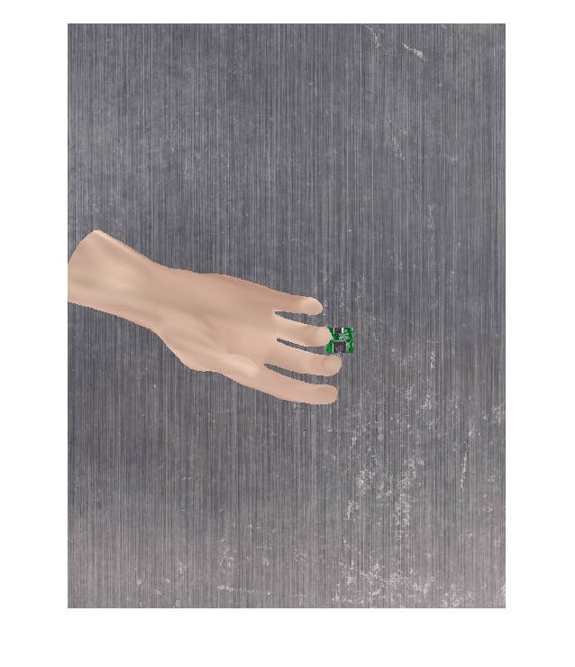
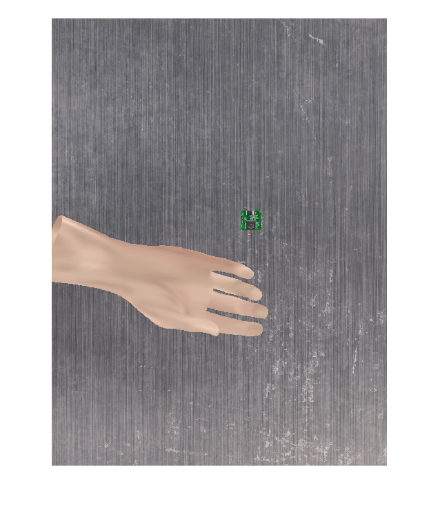
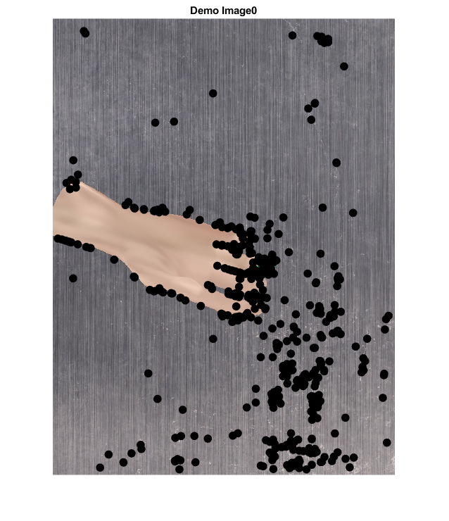
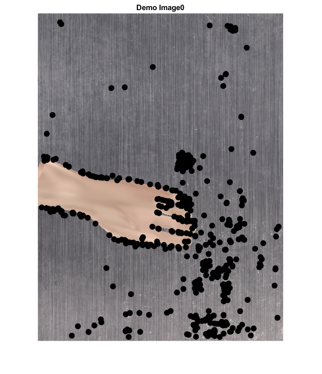
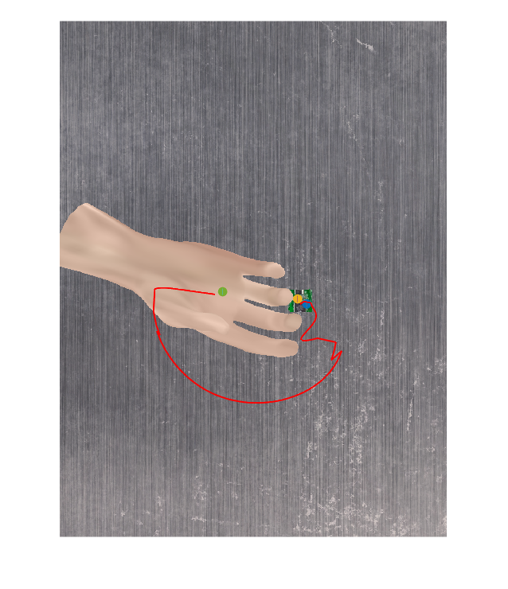

Contents
initialisation
clc; clear all; close all;
currentFolder='C:\Users\elzaatas\OneDrive - Coventry University\cobot-intuitive-teach\GenLfD-tutorial\';
cd(currentFolder);
addpath(genpath(currentFolder));
handfeature=0;
task='handover';
bool_Simulation=0;
if bool_Simulation==1
task_path = strcat('Simulation\data\',task);
else
task_path = strcat('tasks\',task);
end
boolLive=false;
vrep=remApi('remoteApi');
vrep.simxFinish(-1);
id=vrep.simxStart('127.0.0.1',19997,true,true,1000,5);
if id < 0
system(strcat(task_path,"\RobotScene.ttt"));
end
for nbtry=1:100
vrep=remApi('remoteApi');
vrep.simxFinish(-1);
id=vrep.simxStart('127.0.0.1',19997,true,true,5000,5);
if id >= 0
returnCode=vrep.simxStartSimulation(id,vrep.simx_opmode_oneshot);
break;
end
end
returnCode=vrep.simxStartSimulation(id,vrep.simx_opmode_oneshot);
[camerro,vision1] = vrep.simxGetObjectHandle(id,'Vision_sensor0',...
vrep.simx_opmode_oneshot_wait);
[camerro,target] = vrep.simxGetObjectHandle(id,'Target',...
vrep.simx_opmode_oneshot_wait);
[camerro,UR3_base] = vrep.simxGetObjectHandle(id,'UR3',...
vrep.simx_opmode_oneshot_wait);
[camerro,obj1] = vrep.simxGetObjectHandle(id,'obj1',...
vrep.simx_opmode_oneshot_wait);
[camerro,obj2] = vrep.simxGetObjectHandle(id,'obj2',...
vrep.simx_opmode_oneshot_wait);
[returnCode, cam_pos]=vrep.simxGetObjectPosition(id,vision1,-1,...
vrep.simx_opmode_oneshot_wait);
[returnCode, cam_posrel]=vrep.simxGetObjectPosition(id,vision1,UR3_base,...
vrep.simx_opmode_oneshot_wait);
[returnCode, target_init_pos]=vrep.simxGetObjectPosition(id,target,-1,...
vrep.simx_opmode_oneshot_wait);
[returnCode, obj1_init_pos]=vrep.simxGetObjectPosition(id,obj1,-1,...
vrep.simx_opmode_oneshot_wait);
[returnCode, obj2_init_pos]=vrep.simxGetObjectPosition(id,obj2,-1,...
vrep.simx_opmode_oneshot_wait);
[returnCode, obj1_init_or]=vrep.simxGetObjectOrientation(id,obj1,-1,...
vrep.simx_opmode_oneshot_wait);
[returnCode, obj2_init_or]=vrep.simxGetObjectOrientation(id,obj2,-1,...
vrep.simx_opmode_oneshot_wait);
setting up test scene
manual=0;
nbTests= 100;
for testiter=1:nbTests
if manual
trigger =input("Record image? y/n ",'s');
if trigger == 'y'
[returnCode,resolut,image]= vrep.simxGetVisionSensorImage2(id,vision1,0,vrep.simx_opmode_oneshot_wait);
imshow(image);
elseif trigger == 'n'
return;
else
fprintf('invalid input. Click either y or n followed by Enter.')
end
else
scale=0.03;
posobj1=obj1_init_pos+(rand(1,3)*2-1).*[scale,scale,0];
posobj2=obj2_init_pos+(rand(1,3)*2-1).*[scale,scale,0];
posobj2=obj2_init_pos+(rand(1,3)*2-1).*[scale,scale/5,0];
orobj1=[0,0,1].*rand(1,3)*3.1415*2;
orobj2=[0,0,1].*rand(1,3)*3.1415*2;
orobj2=[1/6,1/4,-1/4].*(rand(1,3)*2-1)*3.1415/2+[3.1415/2,0,-3.1415/2];
[returnCode]=vrep.simxSetObjectPosition(id,obj1,-1, posobj1,...
vrep.simx_opmode_oneshot_wait);
[returnCode]=vrep.simxSetObjectPosition(id,obj2,-1,posobj2,...
vrep.simx_opmode_oneshot_wait);
[returnCode]=vrep.simxSetObjectOrientation(id,obj2,-1,orobj2,...
vrep.simx_opmode_oneshot_wait);
[returnCode,resolut,image]= vrep.simxGetVisionSensorImage2(id,vision1,0,vrep.simx_opmode_oneshot_wait);
imshow(image);
end
img=rgb2gray(image);
 
detect features
corners = detectfeatures (img);
[features_new, corners]=extractFeatures(img, corners);
images_path=strcat(task_path, '\results\img', int2str(testiter), '.jpg');
imwrite(image,images_path);
imshow(image); hold on;
plot(corners.Location(:,1),corners.Location(:,2),'.','color','white','MarkerSize',30);
for k=1:length(corners)
plot([corners.Location(k,1),corners.Location(k,1)+10*sin(corners.Orientation(k))],[corners.Location(k,2),corners.Location(k,2)+10*cos(corners.Orientation(k))]...
,'MarkerSize',25,'color','black');
end
hold off;
title(strcat('Demo Image ',int2str(i)));
load(strcat(task_path,'\calib.mat'));
load(strcat(task_path,'\model.mat'));
load(strcat(task_path,'\features.mat'));
load(strcat(task_path,'\parameters.mat'));
matched_mat=0;
bool_all_matched=ones(1,length(indx));
index_matched_feat=zeros(1,10);
for task_img=1:size(features,1)
features_subtask(:,:)=single(features(task_img,:,:));
[boxPairs, matchmetric] = matchFeatures(features_new, features_subtask','Unique',true,'MatchThreshold',100);
figure;
matchedBoxPoints = corners(boxPairs(:, 1), :);
matchedScenePoints = corners(boxPairs(:, 2), :);
showMatchedFeatures(img, img,...
matchedBoxPoints, matchedScenePoints, 'montage')
title(strcat('Image',int2str(j),' and Image', int2str(i))) for feat_indx=1:length(indx)
index_obj = indx(feat_indx);
otherframes=objs(find(objs(:,index_obj)~=0),index_obj);
for frameInObjIndx=length(otherframes):-1:1
frame_id=otherframes(frameInObjIndx);
if length(find(boxPairs(:,2)==frame_id))>0
matched_mat(feat_indx) = 1;
found_frame_indx(task_img,feat_indx)=otherframes(frameInObjIndx);
indx1=find(boxPairs(:,2)==found_frame_indx(task_img,feat_indx));
frame=boxPairs(indx1,1);
pos(task_img,:,feat_indx)=corners.Location(frame,:);
index_matched_feat(task_img,feat_indx)=frame;
end
end
end
if handfeature~=0
[P_hand] = gethandfeatures (fileparts(images_path));
if length(P_hand)~=0
matched_mat(length(indx))=1;
end
end
end
loading yolo...
extracting tags for each image...
tasks\handover\results
['tasks\\handover\\results\\img1.jpg']
tasks\handover\results\img1.jpg
img1.jpg in 3.66 seconds: 1 classes found!
hand with 0.92 confidence
AVG Confidence: 0.92 Count: 1
[[217, 501, 335, 275, 0.9236892461776733]]
loading yolo...
extracting tags for each image...
tasks\handover\results
['tasks\\handover\\results\\img1.jpg']
tasks\handover\results\img1.jpg
img1.jpg in 3.73 seconds: 1 classes found!
hand with 0.92 confidence
AVG Confidence: 0.92 Count: 1
[[217, 501, 335, 275, 0.9236892461776733]]
loading yolo...
extracting tags for each image...
tasks\handover\results
['tasks\\handover\\results\\img1.jpg']
tasks\handover\results\img1.jpg
img1.jpg in 3.49 seconds: 1 classes found!
hand with 0.92 confidence
AVG Confidence: 0.92 Count: 1
[[217, 501, 335, 275, 0.9236892461776733]]
loading yolo...
extracting tags for each image...
tasks\handover\results
['tasks\\handover\\results\\img1.jpg']
tasks\handover\results\img1.jpg
img1.jpg in 3.51 seconds: 1 classes found!
hand with 0.92 confidence
AVG Confidence: 0.92 Count: 1
[[217, 501, 335, 275, 0.9236892461776733]]
loading yolo...
extracting tags for each image...
tasks\handover\results
['tasks\\handover\\results\\img1.jpg']
tasks\handover\results\img1.jpg
img1.jpg in 3.38 seconds: 1 classes found!
hand with 0.92 confidence
AVG Confidence: 0.92 Count: 1
[[217, 501, 335, 275, 0.9236892461776733]]
loading yolo...
extracting tags for each image...
tasks\handover\results
['tasks\\handover\\results\\img1.jpg']
tasks\handover\results\img1.jpg
img1.jpg in 3.55 seconds: 1 classes found!
hand with 0.92 confidence
AVG Confidence: 0.92 Count: 1
[[217, 501, 335, 275, 0.9236892461776733]]

loading yolo...
extracting tags for each image...
tasks\handover\results
['tasks\\handover\\results\\img1.jpg', 'tasks\\handover\\results\\img2.jpg', 'tasks\\handover\\results\\img2_1.jpg']
tasks\handover\results\img1.jpg
img1.jpg in 3.5 seconds: 1 classes found!
hand with 0.92 confidence
tasks\handover\results\img2.jpg
img2.jpg in 3.02 seconds: 1 classes found!
hand with 0.33 confidence
tasks\handover\results\img2_1.jpg
img2_1.jpg in 2.87 seconds: 0 classes found!
AVG Confidence: 0.63 Count: 2
[[217, 501, 335, 275, 0.9236892461776733], [167, 623, 446, 236, 0.33214887976646423], []]
loading yolo...
extracting tags for each image...
tasks\handover\results
['tasks\\handover\\results\\img1.jpg', 'tasks\\handover\\results\\img2.jpg', 'tasks\\handover\\results\\img2_1.jpg']
tasks\handover\results\img1.jpg
img1.jpg in 3.65 seconds: 1 classes found!
hand with 0.92 confidence
tasks\handover\results\img2.jpg
img2.jpg in 3.34 seconds: 1 classes found!
hand with 0.33 confidence
tasks\handover\results\img2_1.jpg
img2_1.jpg in 3.4 seconds: 0 classes found!
AVG Confidence: 0.63 Count: 2
[[217, 501, 335, 275, 0.9236892461776733], [167, 623, 446, 236, 0.33214887976646423], []]
loading yolo...
extracting tags for each image...
tasks\handover\results
['tasks\\handover\\results\\img1.jpg', 'tasks\\handover\\results\\img2.jpg', 'tasks\\handover\\results\\img2_1.jpg']
tasks\handover\results\img1.jpg
img1.jpg in 3.67 seconds: 1 classes found!
hand with 0.92 confidence
tasks\handover\results\img2.jpg
img2.jpg in 3.11 seconds: 1 classes found!
hand with 0.33 confidence
tasks\handover\results\img2_1.jpg
img2_1.jpg in 3.01 seconds: 0 classes found!
AVG Confidence: 0.63 Count: 2
[[217, 501, 335, 275, 0.9236892461776733], [167, 623, 446, 236, 0.33214887976646423], []]
loading yolo...
extracting tags for each image...
tasks\handover\results
['tasks\\handover\\results\\img1.jpg', 'tasks\\handover\\results\\img2.jpg', 'tasks\\handover\\results\\img2_1.jpg']
tasks\handover\results\img1.jpg
img1.jpg in 3.8 seconds: 1 classes found!
hand with 0.92 confidence
tasks\handover\results\img2.jpg
img2.jpg in 3.14 seconds: 1 classes found!
hand with 0.33 confidence
tasks\handover\results\img2_1.jpg
img2_1.jpg in 3.07 seconds: 0 classes found!
AVG Confidence: 0.63 Count: 2
[[217, 501, 335, 275, 0.9236892461776733], [167, 623, 446, 236, 0.33214887976646423], []]
loading yolo...
extracting tags for each image...
tasks\handover\results
['tasks\\handover\\results\\img1.jpg', 'tasks\\handover\\results\\img2.jpg', 'tasks\\handover\\results\\img2_1.jpg']
tasks\handover\results\img1.jpg
img1.jpg in 3.5 seconds: 1 classes found!
hand with 0.92 confidence
tasks\handover\results\img2.jpg
img2.jpg in 3.02 seconds: 1 classes found!
hand with 0.33 confidence
tasks\handover\results\img2_1.jpg
img2_1.jpg in 3.21 seconds: 0 classes found!
AVG Confidence: 0.63 Count: 2
[[217, 501, 335, 275, 0.9236892461776733], [167, 623, 446, 236, 0.33214887976646423], []]
loading yolo...
extracting tags for each image...
tasks\handover\results
['tasks\\handover\\results\\img1.jpg', 'tasks\\handover\\results\\img2.jpg', 'tasks\\handover\\results\\img2_1.jpg']
tasks\handover\results\img1.jpg
img1.jpg in 3.58 seconds: 1 classes found!
hand with 0.92 confidence
tasks\handover\results\img2.jpg
img2.jpg in 3.13 seconds: 1 classes found!
hand with 0.33 confidence
tasks\handover\results\img2_1.jpg
img2_1.jpg in 3.06 seconds: 0 classes found!
AVG Confidence: 0.63 Count: 2
[[217, 501, 335, 275, 0.9236892461776733], [167, 623, 446, 236, 0.33214887976646423], []]

transforming frames
if sum(matched_mat)<length(indx)
imshow(img);
imwrite(img,images_path);
disp('failed')
else
lengthim = size(image,1);
widthim = size(image,2);
cntr_real=[cam_pos(1),cam_pos(2),cam_posrel(3)];
cntr_im=[widthim/2,lengthim/2];
length_real=2*cam_posrel(3)*tan(pi/6);
width_real=length_real*widthim/lengthim;
s_new=struct('p',struct('A',[],'b',[]));
for feat_indx=1:length(indx)
if handfeature~=0 && feat_indx==length(indx)
s_new.p(feat_indx).A=P_hand(1).A;
s_new.p(feat_indx).b=P_hand(1).b;
else
most_common_frame=mode(found_frame_indx(:,feat_indx));
if most_common_frame==0
a=found_frame_indx~=0;
most_common_frame=mode(found_frame_indx(a(:,feat_indx),feat_indx));
end
most_common_frame_indx=find(found_frame_indx(:,feat_indx)==most_common_frame);
most_common_frame_indx=most_common_frame_indx(1);
features_subtask(:,:)=single(features(most_common_frame_indx,:,:));
boxPairs = matchFeatures(features_new, features_subtask','Unique',true,'MatchThreshold',100);
indx1=find(boxPairs(:,2)==most_common_frame);
frame=boxPairs(indx1,1);
if found_frame_indx(most_common_frame_indx,feat_indx)==leadFrames(indx(feat_indx))
s_new.p(feat_indx).b=[0;corners.Location(frame,:)'];
a=corners.Orientation(frame ,1);
s_new.p(feat_indx).A=[[1,0,0];[0,cos(a), sin(a)];[0,-sin(a),cos(a)]];
index(feat_indx)=mode(found_frame_indx(find(found_frame_indx(:,1)~=0),feat_indx));
else
org_indx=leadFrames(indx(feat_indx));
tempx=-(-cntr_im(1)+(s(most_common_frame_indx).p(org_indx).b(3)-cntr_real(2)).*(widthim)./width_real);
tempy=-(-cntr_im(2)+(s(most_common_frame_indx).p(org_indx).b(2)-cntr_real(1)).*(lengthim)./length_real);
s(most_common_frame_indx).p(org_indx).b(2:3)=[tempx,tempy];
temp=s(most_common_frame_indx).p(org_indx).A(3,:);
s(most_common_frame_indx).p(org_indx).A(3,:)=s(most_common_frame_indx).p(org_indx).A(2,:);
s(most_common_frame_indx).p(org_indx).A(2,:)=temp;
s(most_common_frame_indx).p(org_indx).A(:,3)=s(most_common_frame_indx).p(org_indx).A(:,3).*-1;
s(most_common_frame_indx).p(org_indx).A=[[s(most_common_frame_indx).p(org_indx).A;[0,0,0]],[0;0;0;1]];
tempx=-(-cntr_im(1)+(s(most_common_frame_indx).p(most_common_frame).b(3)-cntr_real(2)).*(widthim)./width_real);
tempy=-(-cntr_im(2)+(s(most_common_frame_indx).p(most_common_frame).b(2)-cntr_real(1)).*(lengthim)./length_real);
s(most_common_frame_indx).p(most_common_frame).b(2:3)=[tempx,tempy];
temp=s(most_common_frame_indx).p(most_common_frame).A(3,:);
s(most_common_frame_indx).p(most_common_frame).A(3,:)=s(most_common_frame_indx).p(most_common_frame).A(2,:);
s(most_common_frame_indx).p(most_common_frame).A(2,:)=temp;
s(most_common_frame_indx).p(most_common_frame).A(:,3)=s(most_common_frame_indx).p(most_common_frame).A(:,3).*-1;
s(most_common_frame_indx).p(most_common_frame).A=[[s(most_common_frame_indx).p(most_common_frame).A;[0,0,0]],[0;0;0;1]];
Rab=[[1,0,0];s(most_common_frame_indx).p(org_indx).b(2:3),s(most_common_frame_indx).p(org_indx).A(2:3,2:3)];
most_common_frame=mode(found_frame_indx(find(found_frame_indx(:,1)~=0),feat_indx));
Rac=[[1,0,0];s(most_common_frame_indx).p(most_common_frame).b(2:3),s(most_common_frame_indx).p(most_common_frame).A(2:3,2:3)];
current_b =[corners.Location(frame,:)'];
a=corners.Orientation(frame,1);
current_A=[[cos(a), sin(a)];[-sin(a),cos(a)]];
Rac_new=[[1,0,0];current_b,current_A];
Rab_new=Rac_new*inv(Rac)*Rab;
s_new.p(feat_indx).b=[0; Rab_new(2:3,1)];
Rab_new(2:3,1)=[0,0];
s_new.p(feat_indx).A=Rab_new;
p.b=[0;corners.Location(frame,:)'];
a=corners.Orientation(frame ,1);
p.A=[[1,0,0];[0,cos(a), sin(a)];[0,-sin(a),cos(a)]];
end
end
end
returnval=1;
for obj_group=1:length(leadFrames)
for iter=1:length(s_new.p)
pt_x(iter)=length_real*(cntr_im(2)-s_new.p(iter).b(3))/lengthim+cntr_real(1);
pt_y(iter)=width_real*(cntr_im(1)-s_new.p(iter).b(2))/widthim+cntr_real(2);
end
end
for iter=1:length(s_new.p)
s_new.p(iter).b(2)=pt_x(iter);
s_new.p(iter).b(3)=pt_y(iter);
s_new.p(iter).b(4)=0;
temp=s_new.p(iter).A(2,:);
s_new.p(iter).A(2,:)=s_new.p(iter).A(3,:);
s_new.p(iter).A(3,:)=temp;
s_new.p(iter).A(:,3)=s_new.p(iter).A(:,3).*-1;
s_new.p(iter).A=[[s_new.p(iter).A;[0,0,0]],[0;0;0;1]];
end
if sum(matched_mat)<length(indx)
imshow(img);
imwrite(img,images_path);
else
nbFrames_new = length(indx);
for n=1:nbFrames_new
pTmp(n).b = s_new.p(n).b ;
pTmp(n).A = s_new.p(n).A ;
end
indx1=indx;
indx=leadFrames(indx);
for m=1:nbFrames_new
MuTmp(1:2,:,m) = pTmp(m).A(2:3,2:3) * MuGMR(1:2,:,indx(m)) + repmat(pTmp(m).b(2:3),1,size(MuGMR,2));
for t=1:model.nbData
SigmaTmp(1:2,1:2,t,m) = pTmp(m).A(2:3,2:3) * SigmaGMR(1:2,1:2,t,leadFrames(m)) * pTmp(m).A(2:3,2:3)';
end
if model.nbVar>3
MuTmp(3:size(MuGMR,1),:,m) = MuGMR(3:size(MuGMR,1),:,indx(m)) ;
for t=1:model.nbData
SigmaTmp(3:size(MuTmp,1),3:size(MuTmp,1),t,m) = SigmaGMR(3:size(MuTmp,1),3:size(MuTmp,1),t,indx(m)) ;
end
end
end
reproducing the path
method =3;
MuTmp2=zeros(size(MuGMR,1), model.nbData, model.nbFrames);
SigmaTmp2= zeros(size(MuGMR,1),size(MuGMR,1), model.nbData, model.nbFrames);
if method ==1
for t=1:model.nbData
for m=1:length(leadFrames)
if model.orientless(indx(m))==1 && length(leadFrames)>1
closestid=0;
closestd=100000;
for k=1:length(leadFrames)
if model.orientless(indx(k))==0
d=sqrt((MuTmp(1,t,k)-pTmp(m).b(2))^2+(MuTmp(2,t,k)-pTmp(m).b(3))^2)-model.Mu_dohnut(t,indx(m));
if closestd>d
closestd=d;
closestid=k;
end
else
if k~=m
d=sqrt((pTmp((k)).b(2)-pTmp((m)).b(2))^2+(pTmp((k)).b(3)-pTmp((m)).b(3))^2)-model.Mu_dohnut(t,indx(k));
if closestd>d
closestd=d;
closestid=k;
end
end
end
end
MuTmp2(1:2,t,m)=(closestd/(closestd+model.Mu_dohnut(t,indx(m)))).*(pTmp(m).b(2:3)-MuTmp(1:2,t,closestid))+MuTmp(1:2,t,closestid);
if model.orientless(indx(closestid))==1
MuTmp2(1:2,t,m)=pTmp(m).b(2:3)+(model.Mu_dohnut(t,indx(m))/(closestd+model.Mu_dohnut(t,indx(closestid)))).*[(pTmp((closestid)).b(2)-pTmp((m)).b(2));(pTmp((closestid)).b(3)-pTmp((m)).b(3))];
end
eigenvectorsmall=[(pTmp((closestid)).b(2)-pTmp((m)).b(2)),(pTmp((closestid)).b(3)-pTmp((m)).b(3))];
eigenvectorbig=[(pTmp((closestid)).b(3)-pTmp((m)).b(3)),-(pTmp((closestid)).b(2)-pTmp((m)).b(2))];
V=[eigenvectorsmall;eigenvectorbig];
D=[model.Sigma_dohnut(t,indx(m)),0;0,model.Sigma_dohnut(t,indx(m))*2];
SigmaTmp2(1:2,1:2,t,m)=V*D*inv(V);
if model.nbVar>3
MuTmp2(3:model.nbVar-1,t,m)=MuTmp(3:end,t,m);
SigmaTmp2(3:model.nbVar-1,3:model.nbVar-1,t,m)= SigmaTmp(3:end,3:end,t,m);
end
else
MuTmp2(:,t,m)=MuTmp(:,t,m);
SigmaTmp2(:,:,t,m)=SigmaTmp(:,:,t,m);
end
end
end
elseif method==2
for t=1:model.nbData
for m=1:length(leadFrames)
d=[];point=[];
if model.orientless(indx(m))==1 && length(leadFrames)>1
for k=1:length(leadFrames)
if model.orientless(indx(k))==0
d(k)=abs(sqrt((MuTmp(1,t,k)-pTmp(m).b(2))^2+(MuTmp(2,t,k)-pTmp(m).b(3))^2)-model.Mu_dohnut(t,indx(m)));
point(:,k)=(d(k)/(d(k)+model.Mu_dohnut(t,indx(m)))).*(pTmp(m).b(2:3)-MuTmp(1:2,t,k))+MuTmp(1:2,t,k);
else
if k~=m
d(k)=abs(sqrt((pTmp(k).b(2)-pTmp(m).b(2))^2+(pTmp((k)).b(3)-pTmp((m)).b(3))^2)-model.Mu_dohnut(t,indx(k))-model.Mu_dohnut(t,indx(m)));
point(:,k)=(model.Mu_dohnut(t,indx(m)))/(d(k)+model.Mu_dohnut(t,indx(k))+model.Mu_dohnut(t,indx(m))).*(pTmp(k).b(2:3)-pTmp(m).b(2:3))+pTmp(m).b(2:3);
end
end
end
dd=1./d;
for k=1:length(leadFrames)
if model.orientless(indx(k))==1 && k~=m
MuTmp2(1:2,t,m)=MuTmp2(1:2,t,m)+point(:,k)*dd(k)/sum(dd(dd~=Inf));
elseif model.orientless(indx(k))==0
MuTmp2(1:2,t,m)=MuTmp2(1:2,t,m)+point(:,k)*(dd(k)/sum(dd(dd~=Inf)));
end
end
MuTmp2(1:2,t,m)=MuTmp2(1:2,t,m);
SigmaTmp2(1:2,1:2,t,m)=[[model.Sigma_dohnut(t,indx(m)),0];[0,model.Sigma_dohnut(t,indx(m))]];
if model.nbVar>3
MuTmp2(3:model.nbVar-1,t,m)=MuTmp(3:end,t,m);
SigmaTmp2(3:model.nbVar-1,3:model.nbVar-1,t,m)= SigmaTmp(3:end,3:end,t,m);
end
else
MuTmp2(:,t,m)=MuTmp(:,t,m);
SigmaTmp2(:,:,t,m)=SigmaTmp(:,:,t,m);
end
end
end
elseif method ==3
for m=1:length(indx)
mode=[];
for t=1:model.nbData
d=zeros(1,length(indx));point=zeros(2,length(indx));
if model.orientless(indx1(m))==1 && length(indx)>1
for k=1:length(indx)
if model.orientless(indx1(k))==0
d(k)=abs(sqrt((MuTmp(1,t,k)-pTmp(m).b(2))^2+(MuTmp(2,t,k)-pTmp(m).b(3))^2)-model.Mu_dohnut(t,indx1(m)));
point(:,k)=(d(k)/(d(k)+model.Mu_dohnut(t,indx1(m)))).*(pTmp(m).b(2:3)-MuTmp(1:2,t,k))+MuTmp(1:2,t,k);
else
if k~=m
fdist=sqrt((pTmp(k).b(2)-pTmp(m).b(2))^2+(pTmp((k)).b(3)-pTmp((m)).b(3))^2);
if model.Mu_dohnut(t,indx1(k))+model.Mu_dohnut(t,indx1(m))<fdist
d(k)=fdist-model.Mu_dohnut(t,indx1(k))-model.Mu_dohnut(t,indx1(m));
point(:,k)=(model.Mu_dohnut(t,indx1(m)))/(fdist).*(pTmp(k).b(2:3)-pTmp(m).b(2:3))+pTmp(m).b(2:3);
mode(t,k)=1;
elseif model.Mu_dohnut(t,indx1(k))+model.Mu_dohnut(t,indx1(m))>=fdist && abs(model.Mu_dohnut(t,indx1(k))-model.Mu_dohnut(t,indx1(m)))<=fdist
temp1=model.Mu_dohnut(t,indx1(m))-(model.Mu_dohnut(t,indx1(m))+model.Mu_dohnut(t,indx1(k))-fdist)/2;
temp2=sqrt(model.Mu_dohnut(t,indx1(m))^2-temp1^2);
if indx1(m)<indx1(k)
transmat=[0,-1;+1,0];
else
transmat=[0,1;-1,0];
end
x=(fdist^2-model.Mu_dohnut(t,indx1(k))^2+model.Mu_dohnut(t,indx1(m))^2)/(2*fdist);
y=sqrt(model.Mu_dohnut(t,indx1(m))^2-x^2);
d(k)=0.00000000000000000001;
point(:,k)=pTmp(m).b(2:3)+x.*(pTmp(k).b(2:3)-pTmp(m).b(2:3))./fdist+(transmat*(pTmp(k).b(2:3)-pTmp(m).b(2:3))).*y./fdist;
mode(t,k)=2;
elseif abs(model.Mu_dohnut(t,indx1(k))-model.Mu_dohnut(t,indx1(m)))>fdist
if model.Mu_dohnut(t,indx1(m))>model.Mu_dohnut(t,indx1(k))
d(k) = abs(model.Mu_dohnut(t,indx1(m))-model.Mu_dohnut(t,indx1(k))-fdist);
point(:,k)=pTmp(m).b(2:3)+(pTmp(k).b(2:3)-pTmp(m).b(2:3))*model.Mu_dohnut(t,indx1(m))/fdist;
else
d(k) =abs( model.Mu_dohnut(t,indx1(k))-model.Mu_dohnut(t,indx1(m))-fdist);
point(:,k)=pTmp(m).b(2:3)+(-pTmp(k).b(2:3)+pTmp(m).b(2:3))*model.Mu_dohnut(t,indx1(m))/fdist;
end
mode(t,k)=3;
end
end
end
end
dd=1./d;
for k=1:length(indx)
if k~=m
MuTmp2(1:2,t,m)=MuTmp2(1:2,t,m)+point(:,k)*(dd(k)/(sum(dd(find(dd~=dd(m))))));
end
end
MuTmp2(1:2,t,m)=MuTmp2(1:2,t,m);
SigmaTmp2(1:2,1:2,t,m)=[[model.Sigma_dohnut(t,indx1(m)),0];[0,model.Sigma_dohnut(t,indx1(m))]];
if model.nbVar>3
MuTmp2(3:model.nbVar-1,t,m)=MuTmp(3:end,t,m);
SigmaTmp2(3:model.nbVar-1,3:model.nbVar-1,t,m)= SigmaTmp(3:end,3:end,t,m);
end
else
MuTmp2(:,t,m)=MuTmp(:,t,m);
SigmaTmp2(:,:,t,m)=SigmaTmp(:,:,t,m);
end
end
end
end
for t=1:size(MuGMR,2)
SigmaP = zeros(model.nbVar-1);
MuP = zeros(model.nbVar-1, 1);
for m=1:nbFrames_new
SigmaP = SigmaP + inv(SigmaTmp2(:,:,t,m));
MuP = MuP + SigmaTmp2(:,:,t,m)\ MuTmp2(:,t,m);
end
r(1).Sigma(:,:,t) = inv(SigmaP);
r(1).Data(:,t) = r(1).Sigma(:,:,t) * MuP;
end
end
imshow(image); hold on;
for m=1:nbFrames_new
tempx=-(-cntr_im(1)+(pTmp(m).b(3)-cntr_real(2)).*(widthim)./width_real);
tempy=-(-cntr_im(2)+(pTmp(m).b(2)-cntr_real(1)).*(lengthim)./length_real);
plot(tempx, tempy,'.','markersize',30);
plot([tempx tempx+pTmp(m).A(2,3)], [tempy tempy+pTmp(m).A(3,3)], '-','linewidth',6);
end
if exist('p')
plot(p.b(2), p.b(3),'.','markersize',30);
plot([p.b(2) p.b(2)+p.A(2,3)], [p.b(3) p.b(3)+p.A(3,3)], '-','linewidth',6);
end
tempx=-(-cntr_im(1)+(r(1).Data(2,:)-cntr_real(2)).*(widthim)./width_real);
tempy=-(-cntr_im(2)+(r(1).Data(1,:)-cntr_real(1)).*(lengthim)./length_real);
plot(tempx, tempy,'-','linewidth',1.5,'color','red');
saveas(gcf,strcat(task_path, '\results\img2_', int2str(testiter), '.jpg'));
end

Index exceeds the number of array elements (0).
Error in testrobot (line 214)
most_common_frame_indx=most_common_frame_indx(1);
end